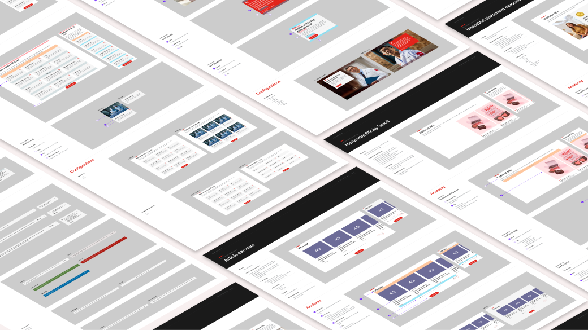
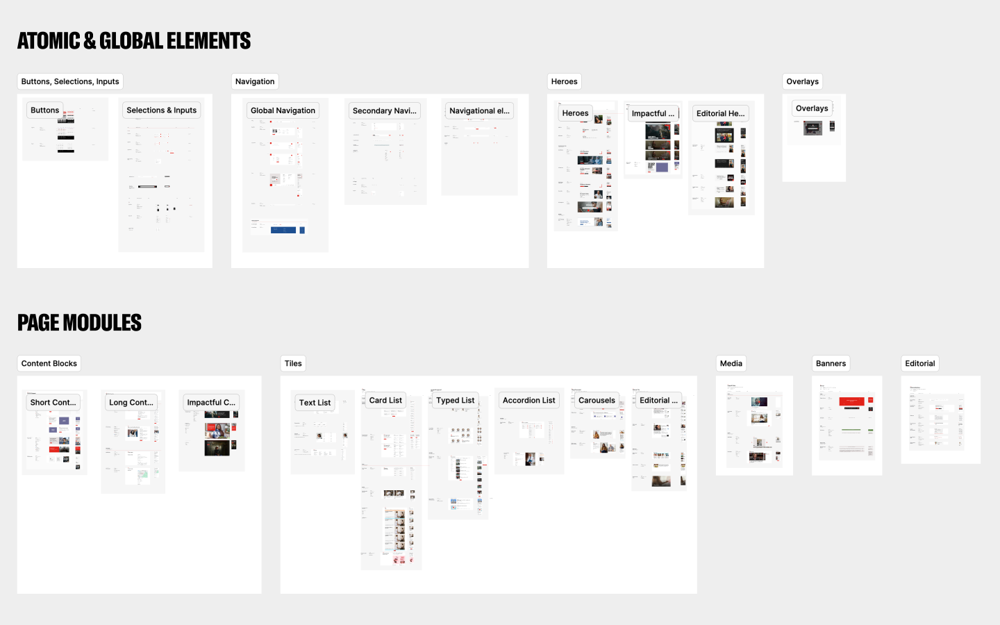
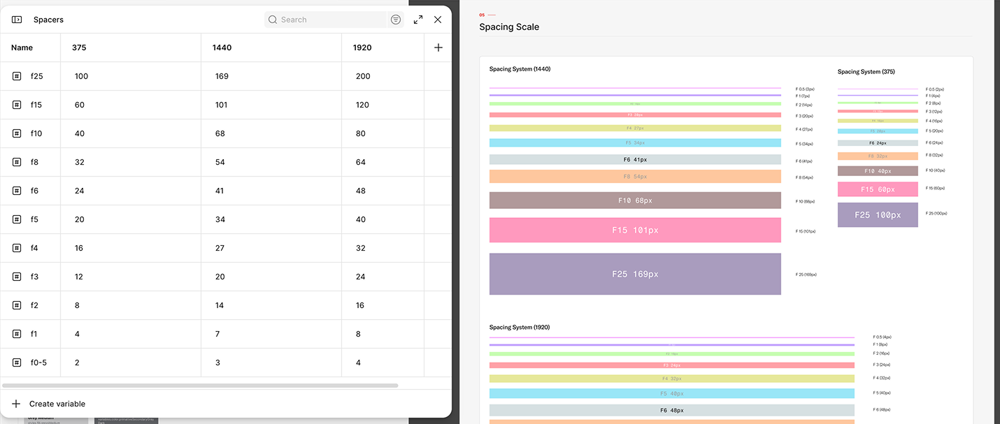
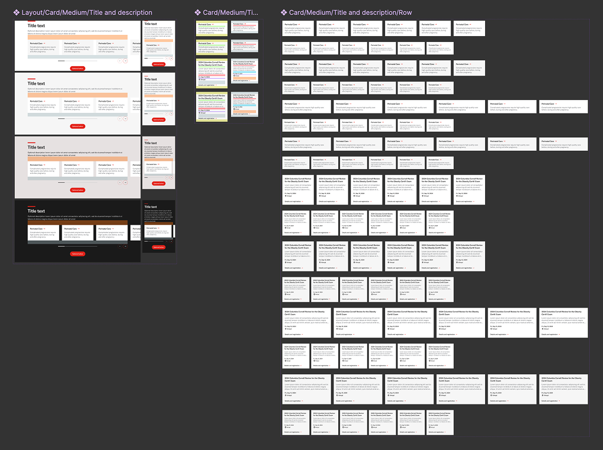
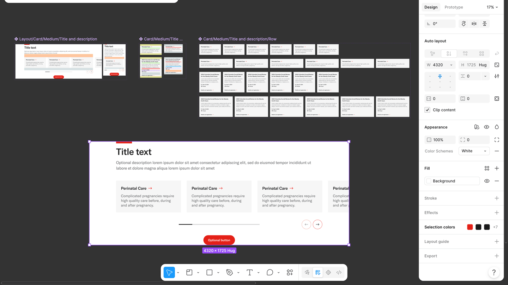

Design system refactor

Reorganising and documenting a design system to improve the publication workflow for authors
Roles
- Systems Design
- Technical Writing
- Figma Expert
This work is from my role as a product designer at an advertising agency
Our team has been working as design partners with a leading hospital system, redesigning their massive 10,000-page website one section at a time. As our library of modular, reusable component grew, it became a challenge to find documentation and specifications on components across different past project files.
We decided it was time to refactor our design system and create a centralised reference for all components. This helps create a shared understanding between authors, developers, and designers, and streamlines the authoring process for the hospital.
With my experience in systems design and technical writing, I led the reorganisation and documentation of the components. I also led the adoption of advanced Figma features that speed up and improve the design workflow.
Methods
Component taxonomy
Because the components had grown over separate projects, we had amassed some redundant components that served slightly different needs. The original categorisation was also becoming unbalanced, as new groupings of components started to emerge organically. I ran regular working sessions with designers and developers to align on the taxonomy, naming, and changes needed to merge components together.
I set the following goals for the component reorganisation:
- Reduce component count: Simplify the system by merging similar components into variants
- Author-friendly organisation: Help authors find components and understand the design system more easily by organising components based on usage
- Simple naming structure: Component names need to be specific enough to work as unique identifiers for developers, but simple enough that everyone would actually use them

Simplifying components with variables
With my background in coding, I led the charge in exploring Figma’s programmatic design features, looking for ways to make the components easier to build and maintain.

This required understanding the intricacies, strengths, and limitations of Figma variables in order to assess where they work best for our design system. Variables in Figma had their limitations, but for us they were the most useful for these workflow improvements:
- Streamline component building and management by reducing duplicate frames needed for design variations
- Reduce work when comping pages for different screen sizes by taking advantage of inherited variable modes
- Improve consistency and reduce mistakes by referencing global values


Documentation for authors
Since existing documentation and specs for components were fragmented across different project files, authors often relied on us as design partners to provide guidance on component usage. To address this, the main deliverable for this project was a single component library reference for authors. The goal was to let authors build pages quickly from a modular set of reusable components, without needing to consult designers or developers.
What goes in a component’s documentation varies depending on whether it’s for designers, developers, or authors. Since the audience was authors, I focused on how they should use a component, what they can configure, and what they should know about its functionality. For each component, I structured the documentation around these areas:
- Overview: Brief description of the component
- Usage: Do’s and don’ts on using the component
- Anatomy: Specs on a component’s building blocks
- Configurable options: Optional elements, colours, min/max constraints
- Functionality: Interactivity and states
AI agents and plugin creation
Cleaning up a large component library is a lot of repetitive and time-consuming work, even with my mastery of keyboard shortcuts. It was more efficient to spend time developing AI-powered workflows that work at scale. Figma’s AI agent was useful for applying basic but specific operations across many components. I developed a few workflows and prompts to speed up different one-off tasks, like resetting style overrides on specific parts of all components.
The agent was intelligent enough to deal with messy, non-uniform inputs, but for more repetitive and well-defined tasks, it was faster to use plugins. While some plugins from the community did parts of what I needed, Figma’s generative plugin feature allowed me to quickly create bespoke plugins that sped up our specific workflows.
For this project, I created three plugins:
- Selection clipboard: Helps with filtering and refining selections in Figma, useful for many different tasks
- External component identifier: Helps with the process of removing all old dependencies in migrating to a central library
- Annotations to Markdown: Helps with exporting designer-maintained documentation to the web
Results
From
300+
to
100 components
From
10+ Figma files and 3 spreadsheets
to
1 source of truth for component specs
In the end, we merged more than 300 components into about 100. The documentation gave authors a better understanding of the components available, from their specs to how they should be used.
For me, this project was a lesson in working at scale in Figma. Building flexible components within a design system required an intimate understanding of advanced Figma features in order to make the right tradeoffs. My experience working with the AI agent gave me the skills to efficiently manage large design libraries.